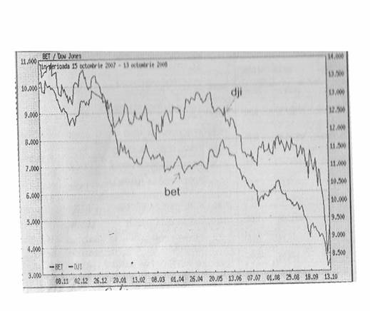
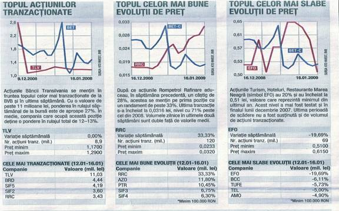
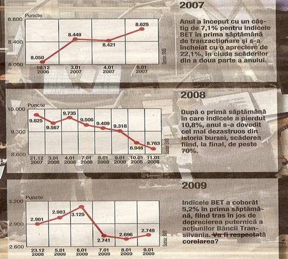
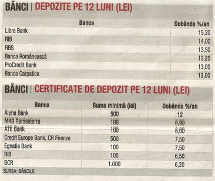

Lucrarea de faţă îşi propune să constituie un instrument e-learning util elevilor şi profesorilor de economie pentru predarea-învăţarea-evaluarea unităţii de învăţare BURSA DE VALORI BUCUREŞTI.
|
CAPITOLE: I. ELEMENTELE DEFINITORII ALE PIEŢEI DE CAPITAL II. BURSA DE VALORI. BURSA DE VALORI BUCUREŞTI III. SISTEMUL DE TRANZACŢIONARE AL BURSEI DE VALORI BUCUREŞTI |


CONCLUZII
Sfârşitul primului an al României ca membră a Uniunii Europene găseşte Bursa de Valori Bucureşti (B.V.B.) pe o treaptă superioară de dezvoltare în termeni calitativi cât şi cantitativi. Anul 2007 a adus, pe de o parte, mai multe tranzacţii, valori zilnice mai mari şi creşteri ale indicilor bursieri, iar pe de altă parte, o ofertă diversificată şi îmbunătaţită de produse şi instrumente bursiere. Cuvintele definitorii pentru activitatea B.V.B. în anul 2007 sunt : confirmare şi consolidare. Confirmare, pentru că toţi indicatorii cantitativi ai B.V.B. s-au aprciat semnificativ faţă de anul premergător integrării. Consolidare, pentru că în decursul anului 2007, B.V.B. s-a apropiat mai mult de obiectivul de a deveni o piaţă regională de referinţă prin noutăţile promovate, ce au stimulat permanent investitorii autohtoni şi străini. Micşorând distanţa faţă de marile pieţe europene, B.V.B. şi-a întărit poziţia de principală piaţă bursieră locală şi a lăsat să se întrevadă perspectiva de a accede în topul burselor în regiune. Bursa de valori s-a angrenat şi în anul 2007 în procesul de dezvoltare a noilor instrumente financiare care să o menţină în centrul atenţiei mediului investiţional. Poziţia de lider regional, deţinută de instituţia bursieră autohtonă în perioada interbelică, este un obiectiv urmărit cu determinare de la reluarea activităţii sale în decembrie 1995. Fiecare nou an apropie B.V.B. de acest obiectiv foarte ambiţios. Dacă în 2006 valoarea medie de tranzacţionare zilnică de acţiuni era cu putin peste 11 milioane euro, în anul 2007, acelaşi indicator a depăşit 16,5 milioane euro. Piaţa reglementata împreuna cu cel de-al doilea sector bursier, administrat de B.V.B., Piaţa Rasdaq, au acumulat o valoare medie de tranzacţionare zilnică de peste 21 de milioane de euro, faţă de 12,4 milioane euro, cu un an în urma. Creşterea cu aproape 70% este cu atât mai importantă cu cât nivelurile de tranzacţionare record s-au mentinut şi în sedinţele derulate în perioada în care pieţele externe, internaţionale şi din regiune, au fost afectate de criza creditelor imobiliare din SUA. Investitorii străini şi-au menţinut încrederea în potenţialul titlurilor româneşti şi nu au amplificat unda de şoc propagată la Bucureşti. Maximul istoric al indicelui BET, ce reflectă cele mai lichide zece companii de pe piaţa reglementată de B.V.B., a fost înregistrat în luna iulie 2007: 10.813,59 puncte. Creşterea BET, in 2007, a fost de 20% (euro) şi 22% (lei-RON). Pe 29 august 2007 au fost tranzacţionate aproximativ 385 de milioane de titluri, cu 170 de milioane mai multe decât în ziua record din 2006. A fost marcat astfel, un nou tip de comportament investiţional la BVB. În ultimii ani se statornicise o regulă : tranzacţiile intrau pe un palier ascendent prelungit o dată cu începutul lunii septembrie, creşterile puternice ale indicilor şi indicatorilor inregistrându-se spre sfârşitul anului. Anul 2007 a început cu salturi semnificative ale preţurilor acţiunilor, evoluţie ce s-a accentuat peste vară, perioadă în care, tradiţional, tranzacţiile « înghetau ». Un obiectiv privit cu scepticism de unii observatori ai pieţei a devenit realitate :capitalizarea bursieră a depăşit 30 de miliarde de euro, în 2007, cu 15% mai mult decât în 2006. (25%-dolari şi 17%-lei). Nivelul record de 32 miliarde euro, din 24 iulie 2007, a fost posibil şi datorită intăririi puternice a monedei naţionale în intervalul iunie-august. Datorită unor cauze economice şi financiare, valoarea tranzacţiilor de la B.V.B. a început să scadă, începând cu a doua jumătate a anului 2008, fiind resimiţite efectele crizei economice. În schema numărul 10, voi prezenta evoluţia indicelui BET şi Dow Jones în perioada 15 octombrie 2007- 13 octombrie 2008. În ultima vreme, piaţa de capital autohtonă a urmat evoluţiile celei americane şi celei europene, în ciuda datelor fundamentale ale emitenţilor. Indicii de la Bursa de Valori Bucureşti au înregistrat fluctuaţii mai accentuate decât cei de afară. Brokerii sunt de părere că legătura dintre pieţe este normală şi este cu atât mai puternică la noi, cu cât volatilitatea bursei bucureştene este foarte mare. Această corelare între indicii de la B.V.B. şi cei americani este foarte strânsă şi a început în momentul în care investitorii străini au pătruns pe Bursa de la Bucureşti, devenind mai accentuată din anul 2007, când am aderat la Uniunea Europeana. Deşi urmăm trendul pieţei americane,la noi scăderile sau creşterile sunt mai mari decat pe piaţa americană din cauza că noi avem o piaţă mult mai sensibilă. In principal, brokerii şi investitorii urmăresc indicii Dow Jones şi S&P500 de pe piaţa americană, dar şi indicii principali de pe celelalte pieţe dezvoltate. Amploarea scăderilor sau a creşterilor este mai mare la noi pentru că suntem o piaţă emergentă, iar noi nu avem aceeaşi lichiditate ca şi pieţele dezvoltate. Primele semne de corelare au apărut prin martie 2007, dar au devenit din ce în ce mai evidente din luna septembrie a anului trecut. Corelarea poate fi privită din două puncte de vedere. În primul rând, în pieţe, există investitori comuni ce adoptă decizii similare, şi în al doilea rând, starea emoţională contează foarte mult. Cea mai dezvoltată piaţă le influenţează pe celelalte. Brokerii sunt conştienţi de faptul că analizele bazate pe indicatori fundamentali nu mai au prioritate, elementele de natură emoţională fiind cele care guvernează tranzacţiile şi consideră că va mai trece un timp până când bursele vor reveni la normalitate, iar indicatorii îşi vor recăpăta importanţa. În ultimele 12 luni (15 octombrie 2007-13 octombrie 2008), indicele Dow Jones a scăzut cu circa 33%, însă indicele BET a pierdut 66%. Tot în perioada menţionată, indicele societăţilor de investiţii financiare , BET-FI s-a redus cu 80%, iar indicele american S&P500 a scăzut cu doar 35%.
 SCHEMA 10 : EVOLUŢIA INDICILOR BET ŞI DOW JONES ÎN ULTIMUL AN (15 OCTOMBRIE 2007 – 13 OCTOMBRIE 2008)
 SCHEMA 11

SCHEMA 12

SCHEMA 13
SCHEMA 14
SCHEMA 15
SCHEMA 16
|